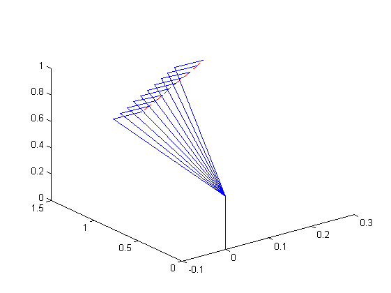

Kinematics and Dynamics of Mechatronic Systems
3rd laboratory task
Piotr Bury , Maciej Paczocha
Contents
- Determine a Homogeneous Transformation matrix
- multiplication of matrices to obtain the position of the links
- Determining the constants and random values of joint coordinates in the ranges
- Subtitute random generated ranges into the matrices
- Defining origin and constant position of the 1st link
- Draw the workspace
Determine a Homogeneous Transformation matrix
clear all; clc % declaration of symbols syms th1 d1 th2 a3 th4 d5 q1 q2 q3 % Determination of a symbolic form of HT matrices – application of mA function A1=mA(th1,d1,0,sym(pi/2)); A2=mA(th2,0,0,0); A3=mA(0,0,a3,0); A4=mA(th4,0,0,sym(pi/2)); A5=mA(sym(pi/2),d5,0,0);
multiplication of matrices to obtain the position of the links
T01=A1; T05=A1*A2*A3*A4*A5;
Determining the constants and random values of joint coordinates in the ranges
input constants
d1_input = 0.4;
d5_input = 0.15;
% Random selection of the values of joint coordinates
th1_input = pi/2-pi*rand;
th2_input = pi/4-(pi/2)*rand;
a3_input=0.6-rand*0.4;
th4_input = pi/2-(pi)*rand;
Subtitute random generated ranges into the matrices
T01_real=subs(T01,{th1,d1},{th1_input,d1_input});
T05_real=subs(T05,{th1,d1,th2,a3,th4,d5},{th1_input,d1_input, th2_input, a3_input, th4_input, d5_input});
% Calculation of orientation of the 3rd link in relation to the 4th link
%
P_real = [T05_real(1,4); T05_real(2,4); T05_real(3,4)];
Pw = [T05_real(1,3);T05_real(2,3);T05_real(3,3)]*d5_input;
Defining origin and constant position of the 1st link
origin = [0 0 0]; joint1 = [T01(1,4) T01(2,4) T01(3,4)]; % Position of joint1 remains constant as it's only dependent from d1 constant variable % joint2 position cannot be distinguished as it wouldn't be visible in the % workspace visualization
Draw the workspace
x=[0 0.02 0.04 0.06 0.08 0.1 0.12 0.14 0.16 0.18]; y=[0.95 0.97 0.99 1.01 1.03 1.05 1.07 1.09 1.11 1.13]; z=[0.75 0.77 0.79 0.81 0.83 0.85 0.87 0.89 0.91 0.93]; path=[x; y; z]; figure(1); plot3(x,y,z,'--r') for i=1:10 joint4=path(:,i)' joint3=joint4-Pw' joint1=[T01_real(1,4) T01_real(2,4) T01_real(3,4)] pts34=[joint4; joint3]; pts13=[joint3; joint1]; pts01=[joint1; origin]; line(pts34(:,1), pts34(:,2),pts34(:,3)); line(pts13(:,1), pts13(:,2),pts13(:,3)); line(pts01(:,1), pts01(:,2),pts01(:,3)); end
joint4 =
0 0.95 0.75
joint3 =
-0.09 0.84 0.81
joint1 =
0 0 0.40
joint4 =
0.02 0.97 0.77
joint3 =
-0.07 0.86 0.83
joint1 =
0 0 0.40
joint4 =
0.04 0.99 0.79
joint3 =
-0.05 0.88 0.85
joint1 =
0 0 0.40
joint4 =
0.06 1.01 0.81
joint3 =
-0.03 0.90 0.87
joint1 =
0 0 0.40
joint4 =
0.08 1.03 0.83
joint3 =
-0.01 0.92 0.89
joint1 =
0 0 0.40
joint4 =
0.10 1.05 0.85
joint3 =
0.01 0.94 0.91
joint1 =
0 0 0.40
joint4 =
0.12 1.07 0.87
joint3 =
0.03 0.96 0.93
joint1 =
0 0 0.40
joint4 =
0.14 1.09 0.89
joint3 =
0.05 0.98 0.95
joint1 =
0 0 0.40
joint4 =
0.16 1.11 0.91
joint3 =
0.07 1.00 0.97
joint1 =
0 0 0.40
joint4 =
0.18 1.13 0.93
joint3 =
0.09 1.02 0.99
joint1 =
0 0 0.40
